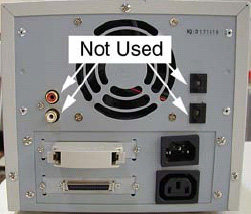

Operating Documentation
Direction 5114045-800, Rev# 10
LightSpeed 4.X Service Information (Advanced)
Operating Documentation |
The two bay SCSI tower used with the Global Console - Octane2 contains a DVD-ROM drive and a Magneto-Optical Disk (MOD) drive. On the Global Console - Linux, the SCSI tower contains a DVD-RAM drive and a MOD drive.
Illustration 1: SCSI 2-bay tower, rear view
